DUNGEON MATCHER / GLOBAL UI EXPLORATIONSilver is the frame.
Gold is the accent.
Three coherent wave/settings directions generated with PixelLab and cleaned in LibreSprite. These are review candidates; production UI and gameplay are unchanged.
Recommendation: A — Royal bevel. Its broader, quieter silver planes and larger gear read most clearly at native size. B is the more delicate ornamental alternative; C explores heavier forged facets.
Native 1× — actual exported pixels
Wave 157×62 · 12 colors / Settings 56×56 · 11 colors · hard transparency
Border detail, palette and source files
Native 1× — actual exported pixels
Wave 170×57 · 12 colors / Settings 56×56 · 12 colors · hard transparency
Border detail, palette and source files
Native 1× — actual exported pixels
Wave 184×60 · 13 colors / Settings 56×56 · 11 colors · hard transparency
Border detail, palette and source files
Reference and source trail
The original target below guided silhouettes and decoration. No pixels were extracted from it to make these candidates.
Open supplied design target
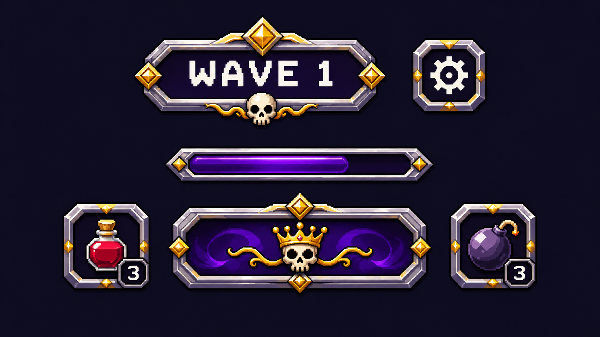
Current golden references, unchanged, at native size:
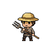
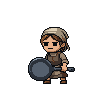
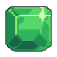
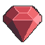
Current live UI for comparison
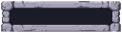
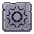
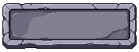
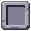
Raw PixelLab sources before cleanup
A and B were generated as pairs. The first C source omitted the wave and overshot the intended Settings size; separate C wave and compact Settings generations completed that direction. Every source is preserved.
 A / raw
A / raw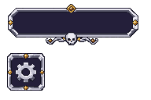
B / raw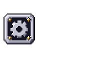
C / incomplete first source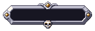
C / waveC / compact settings